Les 109 créatures (100 espèces et les 9 boss) sont refaites en une seule peau avec de vrais os, comme le Pégase. La peau se plie aux articulations : plus de trous aux épaules, plus de morceaux qui flottent ni de jointures de couleur. Toutes les photos ci-dessous sont prises en jeu, au repos (ailes repliées).
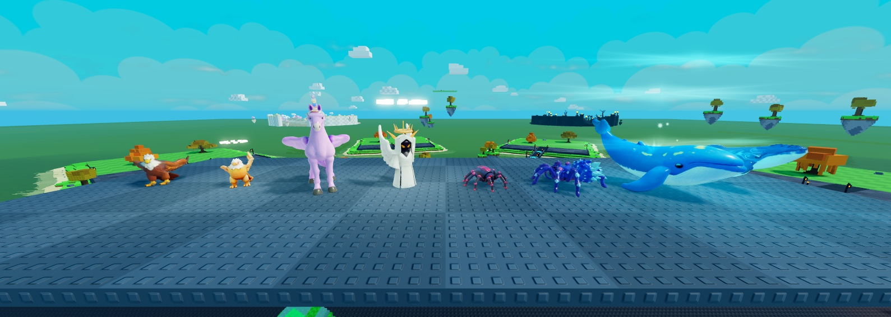
Aigle · Aigle Doré · Alicorne · Ange Lumineux · Araignée · Araignée de Cristal · Baleine Céleste · Baleine des Nuages
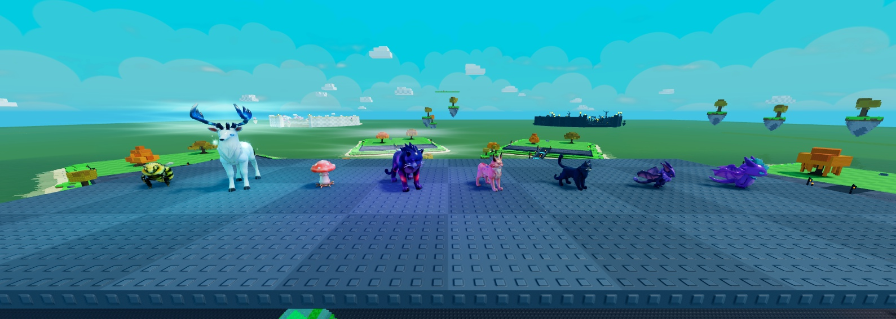
Bourdon · Cerf des Étoiles · Champi Sauteur · Chat Galactique · Chat-Licorne · Chat Noir · Chauve-Souris · Chauve-Souris de Cristal
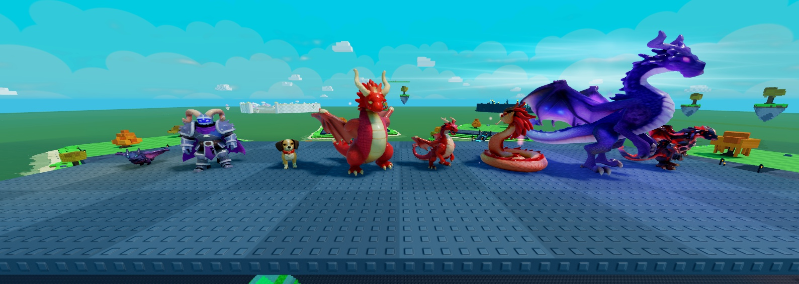
Chauve-Souris d'Ombre · Chevalier d'Ombre · Chiot · Dragon · Dragon Ancien · Dragon Céleste · Dragon Cosmique · Dragon de Lave
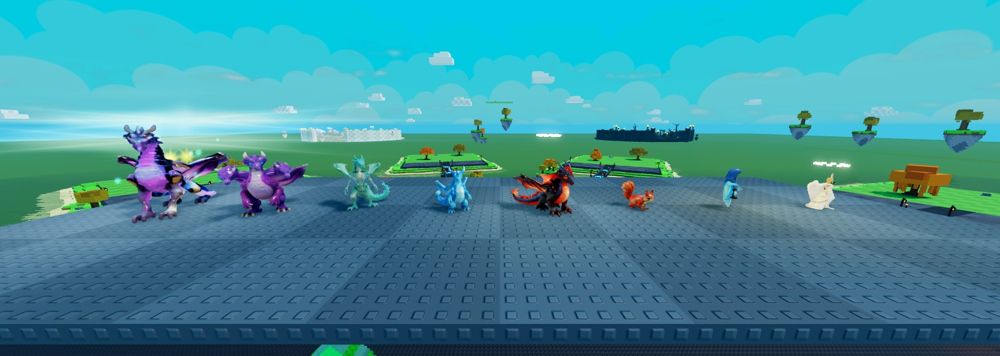
Dragon du Néant · Dragon d'Ombre · Dragon Spectral · Dragonnet de Cristal · Dragonnet de Lave · Écureuil · Esprit Perdu · Fée Céleste
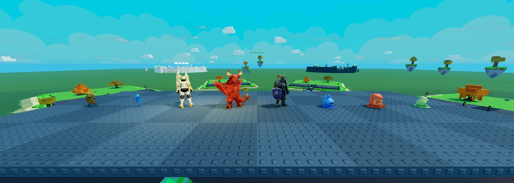
Fée Lumineuse · Feu Follet · Gardien Céleste · Gargouille · Géant · Gelée de Givre · Gelée de Magma · Gelée Verte
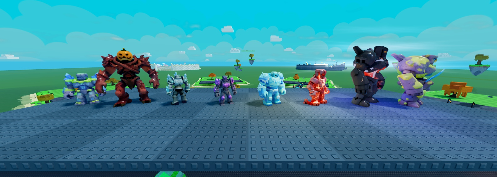
Golem Ancien · Golem Citrouille · Golem de Cristal · Golem Géode · Golem de Glace · Golem de Magma · Golem Météore · Golem de Pierre
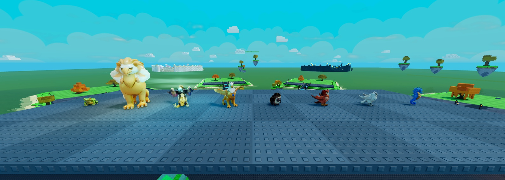
Grenouille · Griffon · Griffon Céleste · Griffon Doré · Hérisson · Hibou · Hibou des Neiges · Hippocampe
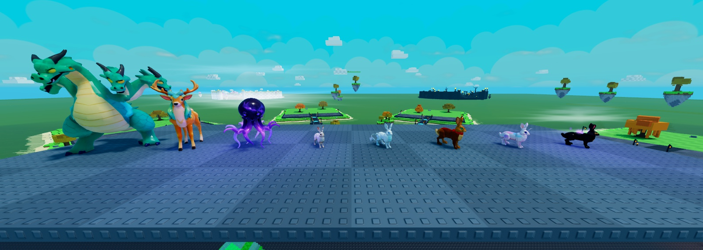
Hydre · Kirin · Kraken du Vide · Lapin · Lapin Ailé · Lapin Farceur · Lapin-Licorne · Lapin Lunaire
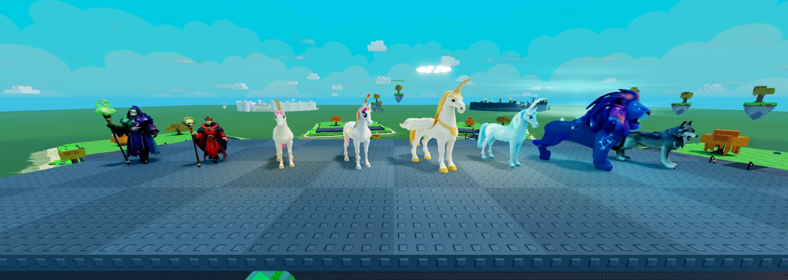
Liche · Liche Ancienne · Licorne · Licorne Arc-en-ciel · Licorne Divine · Licorne de Glace · Lion des Étoiles · Loup
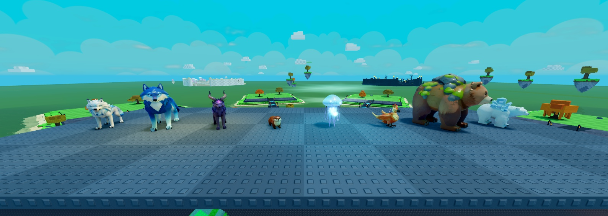
Loup des Neiges · Loup Lunaire · Loup d'Ombre · Loutre · Méduse Astrale · Oiseau de Feu · Ours · Ours Polaire
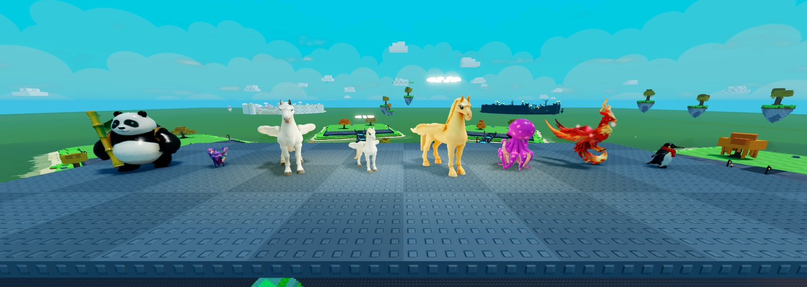
Panda · Papillon · Pégase · Pégase des Nuages · Pégase d'Or · Petit Kraken · Phénix · Pingouin
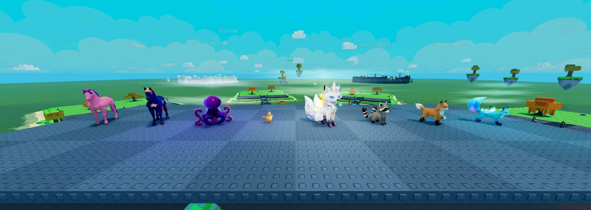
Poney · Poney Étoilé · Poulpe Nébuleuse · Poussin · Prisme Suprême · Raton Laveur · Renard · Renard Aurore
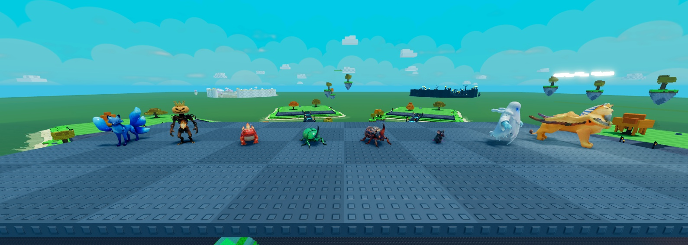
Renard à trois queues · Roi Citrouille · Salamandre de Feu · Scarabée Géant · Scarabée de Lave · Souris · Spectre · Sphinx Doré
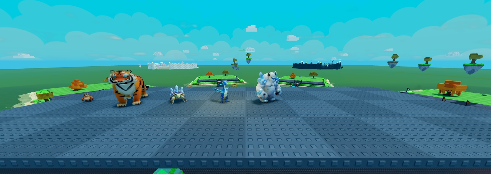
Taupe Mineuse · Tigre · Tortue de Cristal · Wyverne de Givre · Yéti Géant
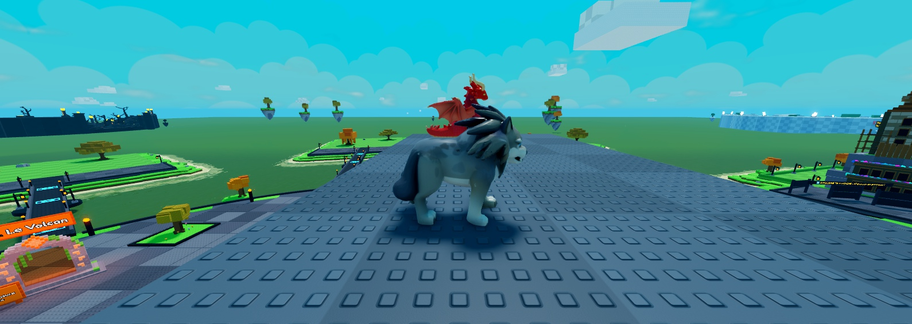
Le Loup qui marche (1) : les pattes alternent en diagonale
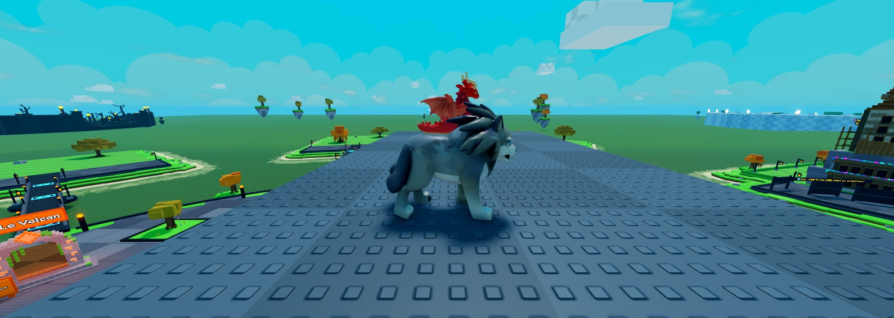
Le Loup qui marche (2) : genoux qui se plient, peau qui suit
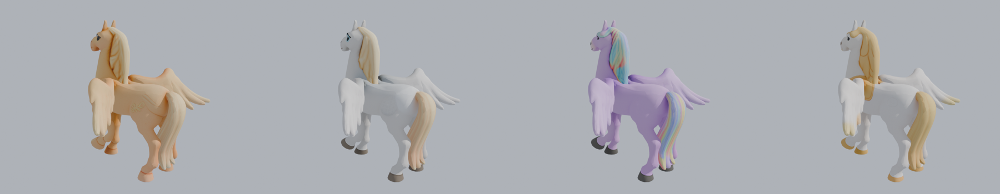
Pégase d'Or · Pégase des Nuages · Alicorne · Licorne Divine : la peau du Pégase repeinte d'un seul bloc (pose test : une patte levée, une aile repliée)
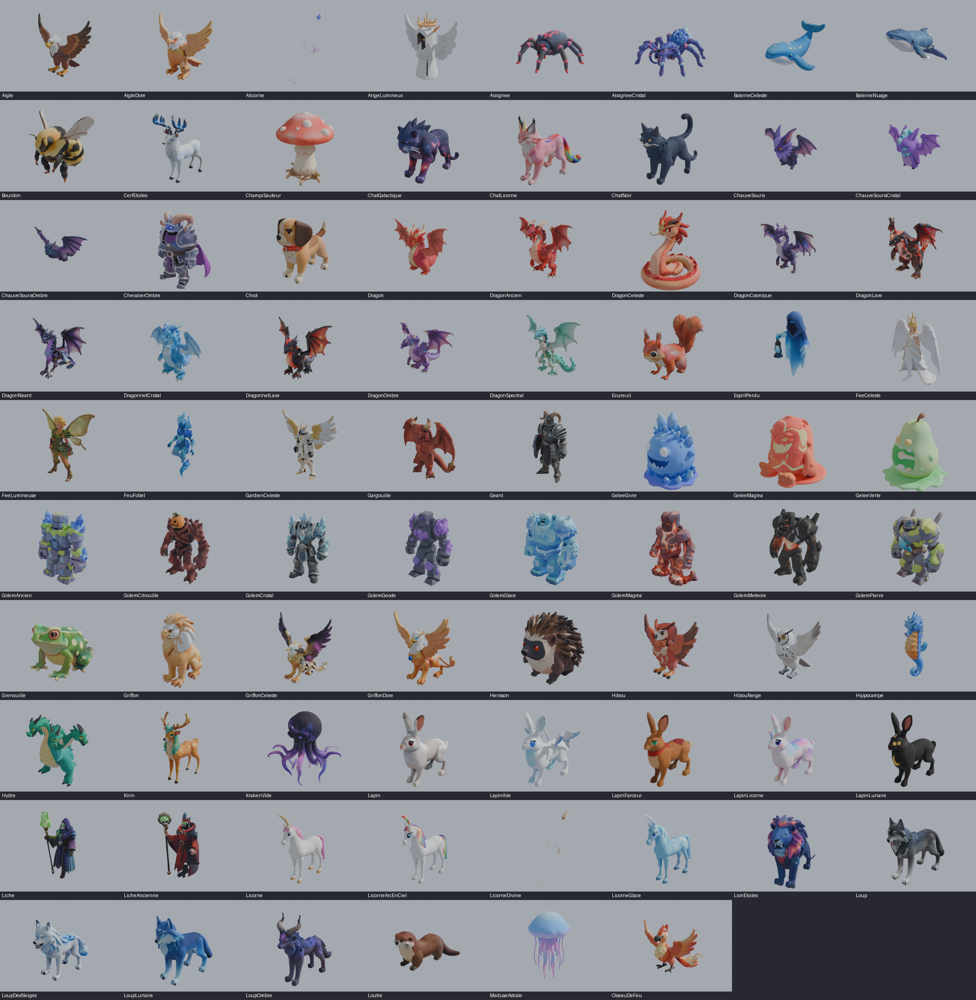
Planche de contrôle : chaque créature après la fonte en une seule peau (rendu Blender)
| Point | État |
|---|---|
| Golem de Cristal, Lion des Étoiles | J'ai mis la version 2 en attendant ton choix (Golem : 2 bras et gros cristaux ; Lion : sans l'anneau). |
| Dragon Ancien | Version à une tête plus imposante, en attendant ton choix (1 tête ou 3 têtes). |
| Hibou, Ours, Sphinx, Ours Polaire, Scarabée, Prisme, Griffon Doré, Loup | Les dernières versions (yeux refaits). |
| 4 chevaux ailés | Repeints d'un seul bloc : couleurs proches des précédentes mais pas identiques. Petite marque claire sur le flanc du Pégase d'Or. |
| Cornes de l'Alicorne et de la Licorne Divine | Accrochées à l'os de la tête : elles suivent la tête quand elle bouge. |
| Tailles | Inchangées (taille par espèce). Ta réponse est attendue pour les géants des balcons du château. |
| Défauts de génération gardés | Le Loup du style D d'origine avait deux queues (réglé : on utilise la version aux yeux refaits) ; quelques petites pièces détachées (antennes du Bourdon, piquants du Hérisson) suivent l'os le plus proche. |